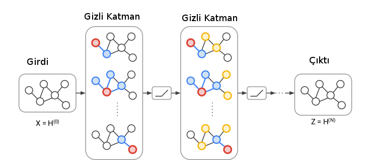

Gerçek dünyadaki pek çok veriyi çizit olarak temsil etmek doğal; arkadaşlık verisi, bilgi temsili. Çizitler bildiğimiz gibi düğümler ve o düğümler arasındaki bağlantılardan oluşur, bilgi temsili örneğinde mesela A kişisi B okulunda okudu için A ve B düğümleri arasında “okudu’’ bağlantısı konur, ve yine bu kişinin C şehrinde”yaşamış’’ olduğu yine bir bağlantı ile temsil edilebilir. Bu şekilde tüm çizit kurulabilir, ve sonra çizitin özetsel bir halini hesaplattırabiliriz (temsili gömme verisi yaratmak mümkün), sonra bu “öğrenilmiş’’ özet üzerinden eksik bilgileri çizite sormak mümkün olabilir. Acaba A kişisi D işinde”çalışmış mıdır?’’. Bu eksik bir bağlantı, belki veride yok ama olması gerekiyor, eldeki özetten bu bilgi tamamlanabilir.
Matematiksel olarak bir düğüm verisinin etrafındaki komşu düğümlerin bir fonksiyonu olarak modellenir.
Yaklaşıma evrişimsel denmesinin sebebi tüm 1. derece komşuluk ilişkilerinin aynı ağırlıklar ile hesaplanıyor olması. Bu isim yaklaşımın ismi derin yapay sinir ağlarındaki evrişimsel operatörlere benzemesinden geliyor, bir evrişimsel operatörü veri üzerinde gezdirdiğimiz zaman o gezdirme yapılırken operatörün hep aynı ağırlıkları kullanıldığı varsayarız / o şekilde kodlarız.
\[ h_v = ReLU(W_{loop}h_v + \sum_{u \in N(v)} W h_u ) \]
\(W_{loop}\) düğümlerin kendilerine olan bağlantısını (loop) modelliyor, buna etraftaki bağlantılar ekleniyor. Fakat bir DYSA’da evrişimsel (ve diğer) tabakalar, katmanlar vardır, GCN’de katmanlar nerede? Katmanlar bir düğümün hesabı için kaç komşuluk seviyesi geriye gitmesi üzerinden hesaplanıyor. Eğer bir düğüm için komşunun komşusuna gidiyorsak bu ilişki ağın ikinci katmanını oluşturur.

Üstteki figürde gördüğümüz gibi ilk seviye komşuluklar mavi komşular ve kırmızı düğüm arasında, bu birinci katman (her kırmızı düğüm için komşuluk aynı ağırlıklarla). İkinci katmanda komşunun komşusu sarı düğümler de dahil ediliyor, ve bunlar da farklı (ama yine her ikinci seviye komşuluk için aynı) ağırlıklarla hallediliyor.
GCN’lerin diğer çizit işleyen yaklaşımlara göre bir diğer avantajı hem bağlantı yapısını, hem de düğümler üzerindeki referans bilgisini de (mesela kişileri temsil eden düğümlerde yaş, cinsiyet gibi bilgiler) kullanabilmesi.
[2] konudaki yayınlardan biri, örnek olarak bilimsel yayınların birbirini referansını analiz etmişler, ayrıca tavsiye sistemleriyle kendi yaklaşımlarını yarıştırmışlar, sonuçlar oldukca iyi [3].
Kod
from __future__ import division
from __future__ import print_function
import time
import os
import numpy as np
import pickle as pkl
import networkx as nx
import scipy.sparse as sp
import tensorflow as tf
import numpy as np
import scipy.sparse as sp
from sklearn.metrics import roc_auc_score
from sklearn.metrics import average_precision_score
flags = tf.app.flags
FLAGS = flags.FLAGS
class OptimizerAE(object):
def __init__(self, preds, labels, pos_weight, norm):
preds_sub = preds
labels_sub = labels
tmp = tf.nn.weighted_cross_entropy_with_logits(logits=preds_sub, targets=labels_sub, pos_weight=pos_weight)
self.cost = norm * tf.reduce_mean(tmp)
self.optimizer = tf.train.AdamOptimizer(learning_rate=FLAGS.learning_rate) # Adam Optimizer
self.opt_op = self.optimizer.minimize(self.cost)
self.grads_vars = self.optimizer.compute_gradients(self.cost)
tmp = tf.cast(tf.greater_equal(tf.sigmoid(preds_sub), 0.5), tf.int32)
self.correct_prediction = tf.equal(tmp, tf.cast(labels_sub, tf.int32))
self.accuracy = tf.reduce_mean(tf.cast(self.correct_prediction, tf.float32))
def parse_index_file(filename):
index = []
for line in open(filename):
index.append(int(line.strip()))
return index
def load_data(dataset):
names = ['x', 'tx', 'allx', 'graph']
objects = []
for i in range(len(names)):
objects.append(pkl.load(open("data/ind.{}.{}".format(dataset, names[i]))))
x, tx, allx, graph = tuple(objects)
test_idx_reorder = parse_index_file("data/ind.{}.test.index".format(dataset))
test_idx_range = np.sort(test_idx_reorder)
test_idx_range_full = range(min(test_idx_reorder), max(test_idx_reorder)+1)
tx_extended = sp.lil_matrix((len(test_idx_range_full), x.shape[1]))
tx_extended[test_idx_range-min(test_idx_range), :] = tx
tx = tx_extended
features = sp.vstack((allx, tx)).tolil()
features[test_idx_reorder, :] = features[test_idx_range, :]
adj = nx.adjacency_matrix(nx.from_dict_of_lists(graph))
return adj, features
def weight_variable_glorot(input_dim, output_dim, name=""):
init_range = np.sqrt(6.0 / (input_dim + output_dim))
initial = tf.random_uniform([input_dim, output_dim], minval=-init_range,
maxval=init_range, dtype=tf.float32)
return tf.Variable(initial, name=name)
_LAYER_UIDS = {}
def get_layer_uid(layer_name=''):
if layer_name not in _LAYER_UIDS:
_LAYER_UIDS[layer_name] = 1
return 1
else:
_LAYER_UIDS[layer_name] += 1
return _LAYER_UIDS[layer_name]
def dropout_sparse(x, keep_prob, num_nonzero_elems):
noise_shape = [num_nonzero_elems]
random_tensor = keep_prob
random_tensor += tf.random_uniform(noise_shape)
dropout_mask = tf.cast(tf.floor(random_tensor), dtype=tf.bool)
pre_out = tf.sparse_retain(x, dropout_mask)
return pre_out * (1./keep_prob)
class Layer(object):
def __init__(self, **kwargs):
allowed_kwargs = {'name', 'logging'}
for kwarg in kwargs.keys():
assert kwarg in allowed_kwargs, 'Invalid keyword argument: ' + kwarg
name = kwargs.get('name')
if not name:
layer = self.__class__.__name__.lower()
name = layer + '_' + str(get_layer_uid(layer))
self.name = name
self.vars = {}
logging = kwargs.get('logging', False)
self.logging = logging
self.issparse = False
def _call(self, inputs):
return inputs
def __call__(self, inputs):
with tf.name_scope(self.name):
outputs = self._call(inputs)
return outputs
class GraphConvolution(Layer):
def __init__(self, input_dim,
output_dim, adj,
dropout=0.,
act=tf.nn.relu, **kwargs):
super(GraphConvolution, self).__init__(**kwargs)
with tf.variable_scope(self.name + '_vars'):
self.vars['weights'] = weight_variable_glorot(input_dim,
output_dim,
name="weights")
self.dropout = dropout
self.adj = adj
self.act = act
def _call(self, inputs):
x = inputs
x = tf.nn.dropout(x, 1-self.dropout)
x = tf.matmul(x, self.vars['weights'])
x = tf.sparse_tensor_dense_matmul(self.adj, x)
outputs = self.act(x)
return outputs
class GraphConvolutionSparse(Layer):
def __init__(self, input_dim,
output_dim, adj,
features_nonzero,
dropout=0., act=tf.nn.relu, **kwargs):
super(GraphConvolutionSparse, self).__init__(**kwargs)
with tf.variable_scope(self.name + '_vars'):
self.vars['weights'] = weight_variable_glorot(input_dim,
output_dim,
name="weights")
self.dropout = dropout
self.adj = adj
self.act = act
self.issparse = True
self.features_nonzero = features_nonzero
def _call(self, inputs):
x = inputs
x = dropout_sparse(x, 1-self.dropout, self.features_nonzero)
x = tf.sparse_tensor_dense_matmul(x, self.vars['weights'])
x = tf.sparse_tensor_dense_matmul(self.adj, x)
outputs = self.act(x)
return outputs
class InnerProductDecoder(Layer):
def __init__(self, input_dim, dropout=0., act=tf.nn.sigmoid, **kwargs):
super(InnerProductDecoder, self).__init__(**kwargs)
self.dropout = dropout
self.act = act
def _call(self, inputs):
inputs = tf.nn.dropout(inputs, 1-self.dropout)
x = tf.transpose(inputs)
x = tf.matmul(inputs, x)
x = tf.reshape(x, [-1])
outputs = self.act(x)
return outputs
class Model(object):
def __init__(self, **kwargs):
allowed_kwargs = {'name', 'logging'}
for kwarg in kwargs.keys():
assert kwarg in allowed_kwargs, 'Invalid keyword argument: ' + kwarg
for kwarg in kwargs.keys():
assert kwarg in allowed_kwargs, 'Invalid keyword argument: ' + kwarg
name = kwargs.get('name')
if not name:
name = self.__class__.__name__.lower()
self.name = name
logging = kwargs.get('logging', False)
self.logging = logging
self.vars = {}
def _build(self):
raise NotImplementedError
def build(self):
""" Wrapper for _build() """
with tf.variable_scope(self.name):
self._build()
variables = tf.get_collection(tf.GraphKeys.GLOBAL_VARIABLES, scope=self.name)
self.vars = {var.name: var for var in variables}
def fit(self):
pass
def predict(self):
pass
class GCNModelAE(Model):
def __init__(self, placeholders, num_features, features_nonzero, **kwargs):
super(GCNModelAE, self).__init__(**kwargs)
self.inputs = placeholders['features']
self.input_dim = num_features
self.features_nonzero = features_nonzero
self.adj = placeholders['adj']
self.dropout = placeholders['dropout']
self.build()
def _build(self):
self.hidden1 = GraphConvolutionSparse(input_dim=self.input_dim,
output_dim=FLAGS.hidden1,
adj=self.adj,
features_nonzero=self.features_nonzero,
act=tf.nn.relu,
dropout=self.dropout,
logging=self.logging)(self.inputs)
self.embeddings = GraphConvolution(input_dim=FLAGS.hidden1,
output_dim=FLAGS.hidden2,
adj=self.adj,
act=lambda x: x,
dropout=self.dropout,
logging=self.logging)(self.hidden1)
self.z_mean = self.embeddings
self.reconstructions = InnerProductDecoder(input_dim=FLAGS.hidden2,
act=lambda x: x,
logging=self.logging)(self.embeddings)
def sparse_to_tuple(sparse_mx):
if not sp.isspmatrix_coo(sparse_mx):
sparse_mx = sparse_mx.tocoo()
coords = np.vstack((sparse_mx.row, sparse_mx.col)).transpose()
values = sparse_mx.data
shape = sparse_mx.shape
return coords, values, shape
def preprocess_graph(adj):
adj = sp.coo_matrix(adj)
adj_ = adj + sp.eye(adj.shape[0])
rowsum = np.array(adj_.sum(1))
degree_mat_inv_sqrt = sp.diags(np.power(rowsum, -0.5).flatten())
adj_normalized = adj_.dot(degree_mat_inv_sqrt).\
transpose().\
dot(degree_mat_inv_sqrt).tocoo()
return sparse_to_tuple(adj_normalized)
def construct_feed_dict(adj_normalized, adj, features, placeholders):
# construct feed dictionary
feed_dict = dict()
feed_dict.update({placeholders['features']: features})
feed_dict.update({placeholders['adj']: adj_normalized})
feed_dict.update({placeholders['adj_orig']: adj})
return feed_dict
def mask_test_edges(adj):
adj = adj - sp.dia_matrix((adj.diagonal()[np.newaxis, :], [0]), shape=adj.shape)
adj.eliminate_zeros()
assert np.diag(adj.todense()).sum() == 0
adj_triu = sp.triu(adj)
adj_tuple = sparse_to_tuple(adj_triu)
edges = adj_tuple[0]
edges_all = sparse_to_tuple(adj)[0]
num_test = int(np.floor(edges.shape[0] / 10.))
num_val = int(np.floor(edges.shape[0] / 20.))
all_edge_idx = range(edges.shape[0])
np.random.shuffle(all_edge_idx)
val_edge_idx = all_edge_idx[:num_val]
test_edge_idx = all_edge_idx[num_val:(num_val + num_test)]
test_edges = edges[test_edge_idx]
val_edges = edges[val_edge_idx]
train_edges = np.delete(edges, np.hstack([test_edge_idx, val_edge_idx]), axis=0)
def ismember(a, b, tol=5):
rows_close = np.all(np.round(a - b[:, None], tol) == 0, axis=-1)
return (np.all(np.any(rows_close, axis=-1), axis=-1) and
np.all(np.any(rows_close, axis=0), axis=0))
test_edges_false = []
while len(test_edges_false) < len(test_edges):
idx_i = np.random.randint(0, adj.shape[0])
idx_j = np.random.randint(0, adj.shape[0])
if idx_i == idx_j:
continue
if ismember([idx_i, idx_j], edges_all):
continue
if test_edges_false:
if ismember([idx_j, idx_i], np.array(test_edges_false)):
continue
if ismember([idx_i, idx_j], np.array(test_edges_false)):
continue
test_edges_false.append([idx_i, idx_j])
val_edges_false = []
while len(val_edges_false) < len(val_edges):
idx_i = np.random.randint(0, adj.shape[0])
idx_j = np.random.randint(0, adj.shape[0])
if idx_i == idx_j:
continue
if ismember([idx_i, idx_j], train_edges):
continue
if ismember([idx_j, idx_i], train_edges):
continue
if ismember([idx_i, idx_j], val_edges):
continue
if ismember([idx_j, idx_i], val_edges):
continue
if val_edges_false:
if ismember([idx_j, idx_i], np.array(val_edges_false)):
continue
if ismember([idx_i, idx_j], np.array(val_edges_false)):
continue
val_edges_false.append([idx_i, idx_j])
assert ~ismember(test_edges_false, edges_all)
assert ~ismember(val_edges_false, edges_all)
assert ~ismember(val_edges, train_edges)
assert ~ismember(test_edges, train_edges)
assert ~ismember(val_edges, test_edges)
data = np.ones(train_edges.shape[0])
adj_train = sp.csr_matrix((data, (train_edges[:, 0],
train_edges[:, 1])),
shape=adj.shape)
adj_train = adj_train + adj_train.T
return \
adj_train, train_edges, val_edges, \
val_edges_false, test_edges, \
test_edges_falsefrom __future__ import division
from __future__ import print_function
import tensorflow as tf
import scipy.sparse as sp
import util
import time
import numpy as np
from sklearn.metrics import roc_auc_score
from sklearn.metrics import average_precision_score
flags = tf.app.flags
FLAGS = flags.FLAGS
flags.DEFINE_float('learning_rate', 0.01, 'Initial learning rate.')
flags.DEFINE_integer('epochs', 200, 'Number of epochs to train.')
flags.DEFINE_integer('hidden1', 32, 'Number of units in hidden layer 1.')
flags.DEFINE_integer('hidden2', 16, 'Number of units in hidden layer 2.')
flags.DEFINE_float('weight_decay', 0., 'Weight for L2 loss on embedding matrix.')
flags.DEFINE_float('dropout', 0., 'Dropout rate (1 - keep probability).')
flags.DEFINE_string('model', 'gcn_ae', 'Model string.')
flags.DEFINE_string('dataset', 'citeseer', 'Dataset string.')
flags.DEFINE_integer('features', 1, 'Whether to use features (1) or not (0).')
model_str = FLAGS.model
dataset_str = FLAGS.dataset
adj, features = util.load_data(dataset_str)
adj_orig = adj
adj_orig = adj_orig - sp.dia_matrix(
( adj_orig.diagonal()[np.newaxis, :], [0]), shape=adj_orig.shape
)
adj_orig.eliminate_zeros()
adj_train, train_edges, val_edges,\
val_edges_false, test_edges,\
test_edges_false = util.mask_test_edges(adj)
adj = adj_train
if FLAGS.features == 0:
features = sp.identity(features.shape[0]) # featureless
adj_norm = util.preprocess_graph(adj)
placeholders = {
'features': tf.sparse_placeholder(tf.float32),
'adj': tf.sparse_placeholder(tf.float32),
'adj_orig': tf.sparse_placeholder(tf.float32),
'dropout': tf.placeholder_with_default(0., shape=())
}
num_nodes = adj.shape[0]
features = util.sparse_to_tuple(features.tocoo())
num_features = features[2][1]
features_nonzero = features[1].shape[0]
model = util.GCNModelAE(placeholders, num_features, features_nonzero)
pos_weight = float(adj.shape[0] * adj.shape[0] - adj.sum()) / adj.sum()
norm = adj.shape[0] * adj.shape[0] / float((adj.shape[0] * adj.shape[0] - adj.sum()) * 2)
tmp = tf.reshape(tf.sparse_tensor_to_dense(placeholders['adj_orig'],validate_indices=False), [-1])
opt = util.OptimizerAE(preds=model.reconstructions,labels=tmp,
pos_weight=pos_weight,norm=norm)
sess = tf.Session()
sess.run(tf.global_variables_initializer())
cost_val = []
acc_val = []
def get_roc_score(edges_pos, edges_neg, emb=None):
if emb is None:
feed_dict.update({placeholders['dropout']: 0})
emb = sess.run(model.z_mean, feed_dict=feed_dict)
def sigmoid(x):
return 1 / (1 + np.exp(-x))
# Predict on test set of edges
adj_rec = np.dot(emb, emb.T)
preds = []
pos = []
for e in edges_pos:
preds.append(sigmoid(adj_rec[e[0], e[1]]))
pos.append(adj_orig[e[0], e[1]])
preds_neg = []
neg = []
for e in edges_neg:
preds_neg.append(sigmoid(adj_rec[e[0], e[1]]))
neg.append(adj_orig[e[0], e[1]])
preds_all = np.hstack([preds, preds_neg])
labels_all = np.hstack([np.ones(len(preds)), np.zeros(len(preds))])
roc_score = roc_auc_score(labels_all, preds_all)
ap_score = average_precision_score(labels_all, preds_all)
return roc_score, ap_score
cost_val = []
acc_val = []
val_roc_score = []
adj_label = adj_train + sp.eye(adj_train.shape[0])
adj_label = util.sparse_to_tuple(adj_label)
for epoch in range(FLAGS.epochs):
t = time.time()
feed_dict = util.construct_feed_dict(adj_norm, adj_label, features, placeholders)
feed_dict.update({placeholders['dropout']: FLAGS.dropout})
outs = sess.run([opt.opt_op, opt.cost, opt.accuracy], feed_dict=feed_dict)
avg_cost = outs[1]
avg_accuracy = outs[2]
roc_curr, ap_curr = get_roc_score(val_edges, val_edges_false)
val_roc_score.append(roc_curr)
print("Epoch:", '%04d' % (epoch + 1), "train_loss=", "{:.5f}".format(avg_cost),
"train_acc=", "{:.5f}".format(avg_accuracy), "val_roc=", "{:.5f}".format(val_roc_score[-1]),
"val_ap=", "{:.5f}".format(ap_curr),
"time=", "{:.5f}".format(time.time() - t))
print("Optimization Finished!")
roc_score, ap_score = get_roc_score(test_edges, test_edges_false)
print('Test ROC score: ' + str(roc_score))
print('Test AP score: ' + str(ap_score))Peki bu metotu keşfedenler çizitleri evrişimsel kavramlarla bağlantılamak istemişler? Bunun sebebi büyük bir ihtimalle mevcut DYSA hesaplayan kodlama altyapısından faydalanmak istemeleri. DYSA hesaplamak için Tensorflow gibi kütüphanelerden oluşan kuvvetli bir kod altyapısı var artık, eğer problemimizi bu kütüphanelerin çözebileceği formlara sokabilirsek pek çok yan faydayı bedava elde edebilmiş oluruz.
Üstteki kodu train.py’dan işletince sonucu göreceğiz,
AUC yüzde 90 civarında olmalı.
Kaynaklar
[1] Titov, Extracting and Modeling Relations with Graph Convolutional Networks, http://www.akbc.ws/2017/slides/ivan-titov-slides.pdf
[2] Kipf, Variational Graph Auto-Encoders, https://arxiv.org/abs/1611.07308
[3] Kipf, Implementation of Graph Auto-Encoders in TensorFlow, https://github.com/tkipf/gae